BugReporter
A collaborative bug tracking tool for development teams. Report bugs, discuss fixes through comments, vote on helpful content, and track each issue through its full lifecycle — from first report to resolved.
Report Bugs
Submit bugs with title, description, image URL, and tags. Track them from open to resolved.
Comment & Discuss
Thread comments on any bug. Post images, edit or delete your own messages.
Vote
Upvote and downvote bugs and comments. Most helpful content rises to the top.
Reputation
Earn score points when your content is upvoted. Lose points for downvoted content.
Moderation
Moderators and admins can manage content and users across the platform.
Notifications
Email and SMS notifications sent to users when their account is banned.
Running the App
The application consists of three components that need to run simultaneously, plus a Docker-managed database.
Prerequisites
- Java 21+
- Node.js 18+
- Docker + Docker Compose
1 — Start the Backend
The backend automatically starts PostgreSQL and Mailpit via Docker Compose if they are not already running.
./mvnw spring-boot:runBackend runs at http://localhost:8081. On first start, demo data is seeded automatically.
Reset the database — Use the IntelliJ run config "BugreporterApplication (Reset DB)" to drop all tables and re-seed fresh demo data.
2 — Start the Frontend
cd bugreporter-frontend
npm install
npm run devFrontend runs at http://localhost:5173. Open this URL in your browser.
3 — (Optional) Start the Notification Service
Required only if you want to test email/SMS notifications on user bans.
cd notification-service
gradle bootRunNotification service runs at http://localhost:8082. Emails are captured by Mailpit at http://localhost:8025.
Demo Credentials
After first startup, these accounts are seeded automatically and ready to use:
| Username | Password | Role | Can do |
|---|---|---|---|
ana | ana | ADMIN | Everything, including role changes |
mihai | mihai | MODERATOR | Manage content and ban users |
rares | rares | USER | Report bugs, comment, vote |
ioana | ioana | USER | Report bugs, comment, vote |
Register & Login
Creating an account
Navigate to the Register page from the top navigation bar.
Enter a unique username, email address, password, and optionally a phone number (used for ban notifications).
You are automatically logged in and redirected to the home page.
Logging in
Click Login in the navigation bar.
Provide your username and password.
Admins are sent to the Admin panel. All other users go to the home page. Your session is stored locally — you stay logged in on refresh.
Banned accounts — If your account has been banned, you will see an error message at login and cannot access the application.
Browsing Bugs
The bug list is public — no login required to read bugs or comments.
Bug list (/bugs)
- All bugs shown, sorted newest first
- Each card shows: title, status badge, author name with reputation score, creation date, and vote score
- Click any bug card to open its detail page
Filtering & searching
| Filter | How to use | Auth required? |
|---|---|---|
| Search by title | Type in the search box — matches any substring, case-insensitive | No |
| Filter by tag | Click a tag chip on any bug, or type a tag name in the tag filter | No |
| Bugs by user | Click a username in the bug list | No |
| My bugs | Click "My Bugs" button in the filter bar | Yes |
Reporting a Bug
You must be logged in to report a bug.
The button appears in the bug list page header when you are logged in.
Provide a title (required), description (required), and an optional image URL. The status is always set to OPEN automatically.
The bug appears at the top of the list immediately.
Open the bug detail page and use the tag input field to add comma-separated tags. New tags are created automatically if they do not exist yet.
Tags are shared — If you type a tag name that already exists, the existing tag is reused. This keeps filtering consistent across all bugs.
Managing Your Bugs
Open a bug you authored to see the management controls.
Editing a bug
Click Edit to modify the title, description, or image URL. Only the bug author (or a moderator/admin) can edit a bug. Click Save to confirm or Cancel to discard.
Deleting a bug
Click Delete on the bug detail page. The bug and all its comments are permanently removed.
Marking as resolved
When a solution has been found, click Mark as Resolved. This sets the status to FIXED and disables further commenting. Only the bug's author can do this.
Bug Status Lifecycle
Each bug progresses through statuses as work happens:
| Status | When it's set | Who sets it | Commenting |
|---|---|---|---|
| OPEN | Bug is first created | Automatic | ✅ Allowed |
| IN_PROGRESS | First comment is posted | Automatic | ✅ Allowed |
| FIXED | Author clicks "Mark as Resolved" | Bug author | ❌ Disabled |
| CLOSED | Moderator manually closes it | Moderator / Admin | ❌ Disabled |
Voting
Voting surfaces the most helpful bugs and comments and affects reputation scores.
How to vote
- Click ▲ to upvote, ▼ to downvote on any bug or comment
- You must be logged in
- You cannot vote on your own bugs or comments
- One vote per item — clicking the same button again removes your vote (toggle)
- Clicking the opposite button switches your vote
Vote score
The vote score = upvotes − downvotes. It is displayed on every bug and comment.
+5 = positive
0 = neutral
-3 = negative
Voting rules — full reference
Bug voting
| Action | Bug score |
|---|---|
| New upvote | +1 |
| New downvote | −1 |
| Remove upvote (click again) | −1 |
| Remove downvote (click again) | +1 |
| Switch upvote → downvote | −2 |
| Switch downvote → upvote | +2 |
Comment voting
Same score rules apply to comments. Comments are automatically sorted by score.
Reputation Score
Every user starts with a score of 0. Your score is shown in brackets next to your name on all bugs and comments: alice [+12.5]
| Event | Your score changes by |
|---|---|
| Someone upvotes your bug | +2.5 |
| Someone downvotes your bug | −1.5 |
| Someone upvotes your comment | +5.0 |
| Someone downvotes your comment | −2.5 |
| You downvote someone else's comment | −1.5 (to you, the voter) |
The downvote penalty on voters discourages spam downvoting. Think before you downvote — it costs you too.
User Roles
BugReporter has three roles with increasing privileges. Every new account starts as a User.
USER
- Browse bugs & comments (public)
- Register & login
- Report bugs
- Edit / delete own bugs
- Mark own bug as resolved
- Add tags to any bug
- Post, edit, delete own comments
- Vote on others' bugs & comments
- View "My Bugs" filter
MODERATOR
- All User capabilities
- Edit any bug or comment
- Delete any bug or comment
- Change bug status via dropdown
- View users table
- Ban / unban users
ADMIN
- All Moderator capabilities
- Change any user's role
- View all bugs in admin panel
- View all comments in admin panel
- Cannot be banned
Moderator Features
Access the Moderator panel at /moderator (visible in the navbar when logged in as Moderator or Admin).
Editing any content
As a moderator, the Edit button appears on all bugs and comments, not just your own. Use the same inline edit flow as regular users.
Deleting any content
Click the … menu → Delete on any bug or comment. Confirm in the dialog. Deleted content is permanent.
Changing bug status
A status dropdown appears on every bug detail page when you are a moderator. You can set any status: OPEN, IN_PROGRESS, FIXED, or CLOSED.
Banning users
Navigate to /moderator. The user table is displayed.
Locate the user in the table by username or email.
The user is immediately banned. They receive an email and SMS notification. Their row shows "Banned: Yes" and the button changes to "Unban".
Moderators cannot ban other moderators or admins. Only regular User accounts can be banned.
Unbanning users
Find the banned user in the table — the button shows Unban. Click it to restore their access immediately.
Admin Features
Access the Admin panel at /admin. Admins have all moderator capabilities plus role management.
Changing a user's role
In the admin users table, find the user and use the role dropdown to assign USER, MODERATOR, or ADMIN. The change takes effect immediately.
Viewing all content
The admin panel shows separate tabs for all users, all bugs, and all comments across the entire platform.
Admin accounts cannot be banned — even by other admins.
API Endpoints
Base URL: http://localhost:8081/api
Authentication
| Method | Path | Auth | Description |
|---|---|---|---|
POST | /auth/login | — | Login, returns JWT token |
POST | /auth/register | — | Register, returns JWT token |
Bugs
| Method | Path | Auth | Description |
|---|---|---|---|
GET | /bugs | — | All bugs, newest first |
GET | /bugs/{id} | — | Single bug |
GET | /bugs/filter?search=… | — | Search by title |
GET | /bugs/filter?tag=… | — | Filter by tag |
GET | /bugs/filter?mine=true | Required | Your own bugs |
POST | /bugs | Required | Create bug |
PUT | /bugs/{id} | Required | Edit bug (author / mod) |
DELETE | /bugs/{id} | Required | Delete bug (author / mod) |
POST | /bugs/{id}/tags | Required | Add tags |
PATCH | /bugs/{id}/resolve | Required | Mark as resolved (author only) |
PATCH | /bugs/{id}/status | Moderator | Change status |
POST | /bugs/{id}/vote | Required | Vote on bug |
Comments
| Method | Path | Auth | Description |
|---|---|---|---|
GET | /comments/bug/{bugId} | — | All comments for a bug |
POST | /comments/bug/{bugId} | Required | Post a comment |
PUT | /comments/{id} | Required | Edit comment (author / mod) |
DELETE | /comments/{id} | Required | Delete comment (author / mod) |
POST | /comments/{id}/vote | Required | Vote on comment |
Admin
| Method | Path | Role | Description |
|---|---|---|---|
GET | /admin/users | Mod / Admin | All users |
PUT | /admin/users/{id}/ban | Mod / Admin | Ban or unban user |
PUT | /admin/users/{id}/role | Admin | Change user role |
GET | /admin/bugs | Admin | All bugs (admin view) |
GET | /admin/comments | Admin | All comments (admin view) |
Architecture Diagrams
Deployment — How everything fits together
Component — System components
Design Model — Architectural layers
Domain Model — Core entities
Data Model (ER)
Database Schema
Class Diagram
Package Diagram
Sequence: Login Flow
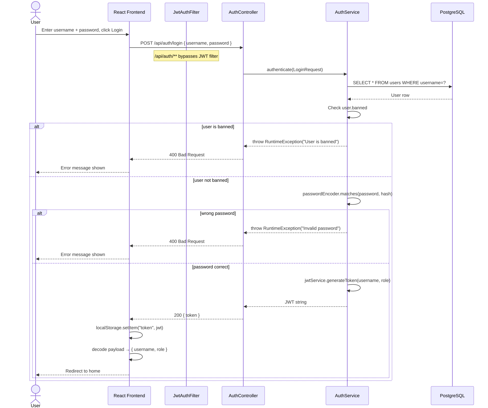
Sequence: Create Bug
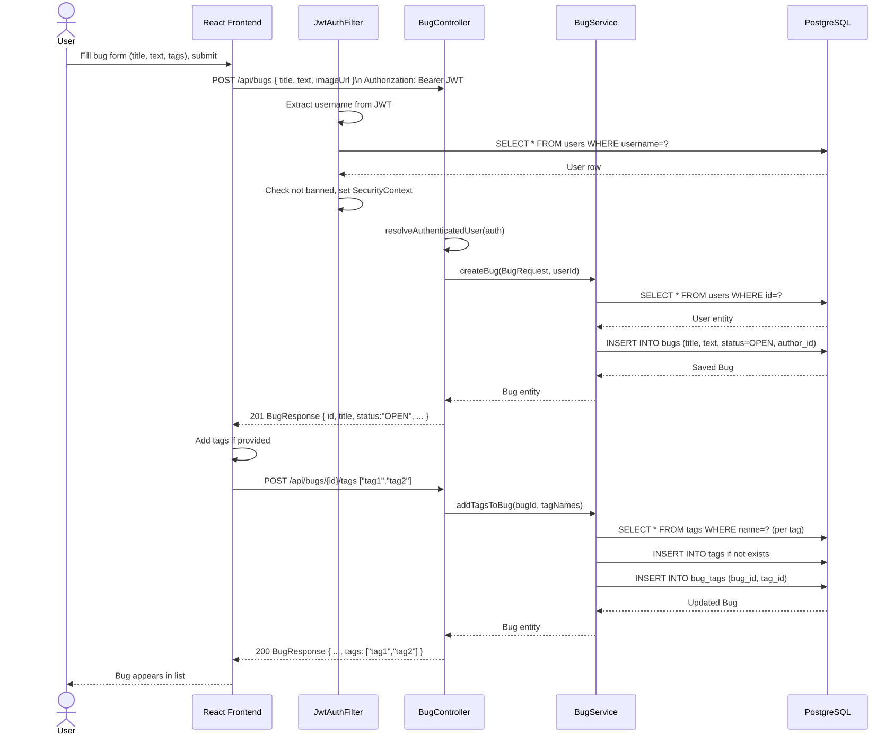
Sequence: Vote on Comment
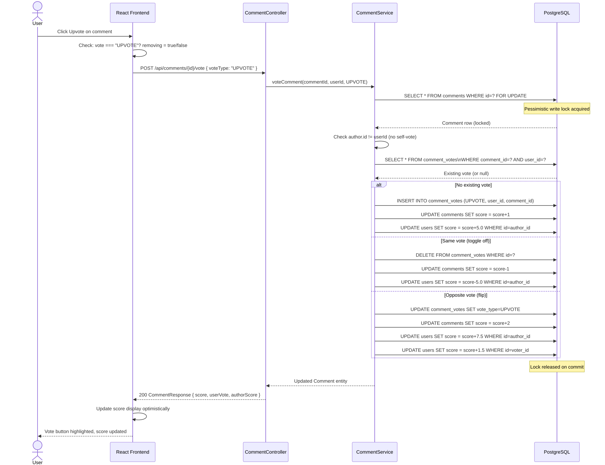
Sequence: Ban User
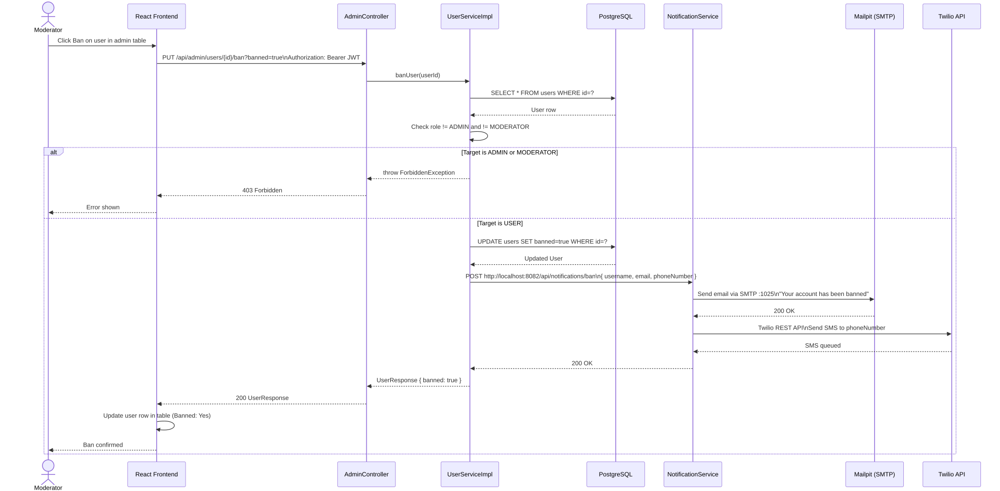
Tech Stack
| Layer | Technology | Version |
|---|---|---|
| Backend language | Java | 21 |
| Backend framework | Spring Boot | 4.0.3 |
| Database | PostgreSQL | 17 |
| Auth | JWT (JJWT) | 0.13.0 |
| Frontend language | JavaScript (JSX) | ES2022+ |
| Frontend framework | React | 19 |
| Build tool | Vite | 8 |
| E2E testing | Cypress | 15 |
| Email (dev) | Mailpit | v1.27 |
| SMS | Twilio SDK | 9.13.0 |
| Containers | Docker Compose | — |
| CI | GitHub Actions | — |
Team
Afrasinei Serban
Comments (frontend & backend), backend security, JWT filter, voting logic
Berar Alexandra
Auth & admin (frontend & backend), frontend setup, user management, notifications
Pavel Catalin
Bugs (frontend & backend), tag system, search & filter, bug status lifecycle
Comments
Any logged-in user can comment on a bug that is OPEN or IN_PROGRESS. Comments are sorted by their vote score — most helpful comments appear first.
Posting a comment
Scroll to the bottom of the bug detail page. Type your comment in the text area, optionally provide an image URL, and click Post Comment.
Status flip — Posting the very first comment on an OPEN bug automatically changes its status to IN_PROGRESS.
Editing or deleting a comment
Click the … menu on any comment you authored. Choose Edit to modify the text inline, or Delete to remove it. A confirmation dialog appears before deletion.
Sorting comments
Use the sort dropdown above the comment list to choose between: